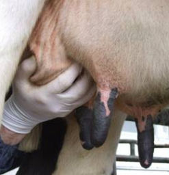
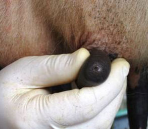
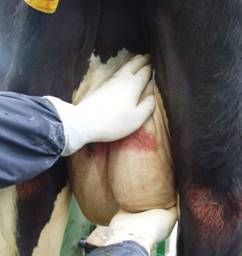

Clinical Examination of the udder
The size, conformation and symmetry of the udder should be examined. Abnormalities of size and consistency of the quarters may be seen and felt. Palpation is of greatest value when the udder has been recently milked, whereas visual examination of both the full and empty udder may be useful. Dry cows are assessed first by inspection, then palpation. The secretion is examined only if palpation detects firmness or heat suggestive mastitis in one or more quarters. Lactating cows routinely require stripping of milk. The udder should be viewed from behind and the two back quarters compared for symmetry. By lifting up the back quarters, the front quarters can be viewed. A decision on which quarter of a pair is abnormal may depend on palpation, which can be carried out simultaneously on the opposite quarter of a pair. In most forms of mastitis observed abnormalities appear mainly in the region of the milk cistern.
The whole udder must be palpated, particularly if chronic mastitis is suspected. Teats and supramammary lymph nodes should also be palpated. Teats should be examined individually for teat end abnormalities, skin condition, inflammatory or neoplastic conditions, photosensitisation, oedema or evidence of previous injury. Palpation and inspection of the udder aim to find fibrosis, inflammatory swelling and any atrophy of mammary tissue. Fibrosis may be a diffuse increase in connective tissue, making a quarter feel firmer than its opposite number and usually with a more nodular surface on light palpation. Local fibrosis may also occur in a quarter that varies in size from pea-like lesions to masses as large as a fist. Acute inflammatory swelling is always diffuse, is accompanied by heat, pain and abnormal secretions. In severe cases areas of gangrene or large abscesses may develop in the glandular tissue. The terminal stage of chronic mastitis is atrophy of the gland. On casual examination an atrophied quarter may look normal because of its small size, while its opposite normal quarter is judged to be hypertrophic. Careful palpation will reveal that little functioning mammary tissue remains in the atrophic quarter. Udder skin should be checked for cracks, haemorrhages, scabs, sores and other lesions. Palpation of the supramammary lymph nodes is valuable tool in mastitis diagnosis since they enlarge in mastitis.
|  |  |  |
Photos Kiro R Petrovski, 2008
Tips on sampling milk from a cow
Note: kneading the udder before milk sampling can stimulate let-down and assist in collecting the sample.
After cleaning the teat as described above, block off the top of the teat by squeezing it firmly between your thumb and fore finger.
Express milk from the teat by squeezing the teat progressively from top to bottom with your other three fingers.
Release your thumb and forefinger to allow the teat to re-fill with milk then repeat.
TAKE CARE!
Most cows tolerate handling of the udder and teats in the cowshed but some do not. Heifers in particular may react adversely to milking and mastitis can be a very painful condition.
Remember - any cow can kick and injure the handler at any time!